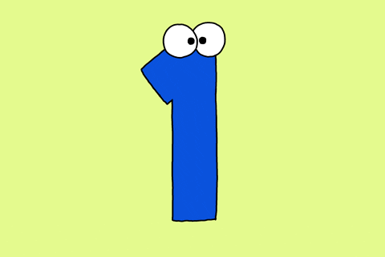

Tudors Tipps, wie man glücklicher sein kann
...eine sehr schöne Präsentation @Deutschkurs
Na, jetzt, warum habe ich diese Präsentation gemacht?
Na, dann, beginnen wir mit den Tipps, oder?

Es kann nichts so schlecht sein, dass es nicht auch für etwas gut ist
 Wir haben zu viel in unserem Leben zu tun, um Zeit zu haben, unglücklich zu sein
Wir haben zu viel in unserem Leben zu tun, um Zeit zu haben, unglücklich zu sein
Egal was schief geht, man kann es immer überwinden
Wenn wir glücklich sind, werden alle um uns herum davon profitieren.
Glücklich sein ist aber keine exakte Wissenschaft
...und so, viel Spaß dabei :)
Zum Schluss möchte ich, dass jeder einen Satz darüber sagt, was ihn glücklich macht.
...und natürlich könnte ich damit beginnen.